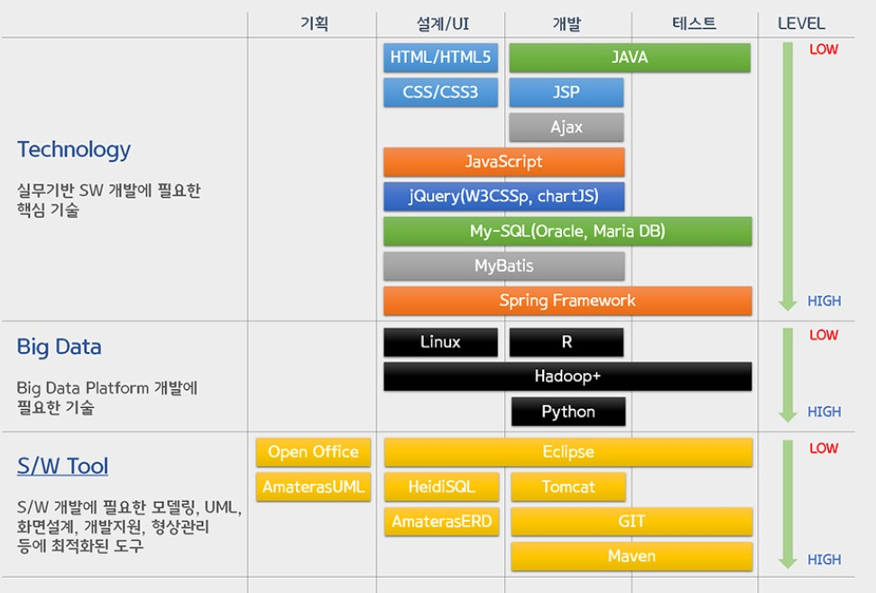

유가증권은 재산적 가치를 가지는 사권(私権)을 표시하는 것으로 재산권의 원활한 유통과 이용을 도모하는 증서이다. 줄여서 증권이라고도 불린다. 쉽게 풀어 말하면 종이쪼가리에 이 종이를 소지하고 있는 사람은 무엇을 얼마나 소지하고 있다 적어놓고 법적 공증을 통해 상법상의 재산권으로 인정받는 것이다.
| n1 | n2 |
| d1 | d2 |
유가증권은 소지자가 명시되어 있지 않고[1] 그 종이 조각 자체가 재산권이기 때문에 분실하면 그 재산을 잃은 것이라 생각하면 된다.[2] 즉 소지자가 항상 변할 수 있으며, 양도, 구입, 판매, 증여 등이 매우 쉽게 이루어진다. 어떻게 보면 화폐와 유사하다고 생각할 수 있는데 화폐는 유가증권의 일종이다.[3] 다른 증권들과 차이가 있다면, 현대의 화폐는 발행국가에 한해 어디서나 액면가 그대로 받아주지만[4], 다른 종류의 유가증권은 액면가 그대로 받아주는 곳이 좀 한정적이라는 게 다르다. 그러나 100% 액면가로 받아주는 곳에서 대부분 현금화가 가능하기 때문에 크게 상관 없다. 가장 규모가 큰 유가증권 시장으로 주식시장이 있다.
